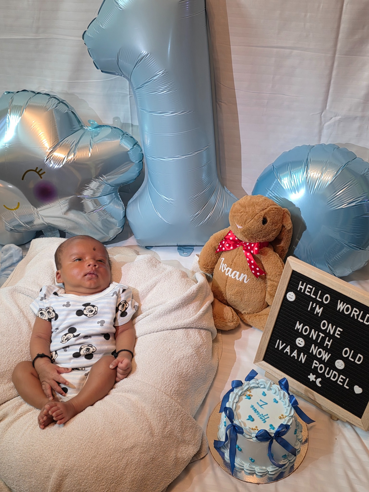
One month
Hello world. I'm one month old now.
One day you'll be old enough to open this yourself.
Until then, we'll keep the memories here.
Not a birthday page. Not a photo album. A living little record of the days you were too young to remember — but we never want to forget.
I was already waiting for you. Before your first smile, before the tiny clothes and the late-night calls, there was simply the excitement of knowing you were on your way.
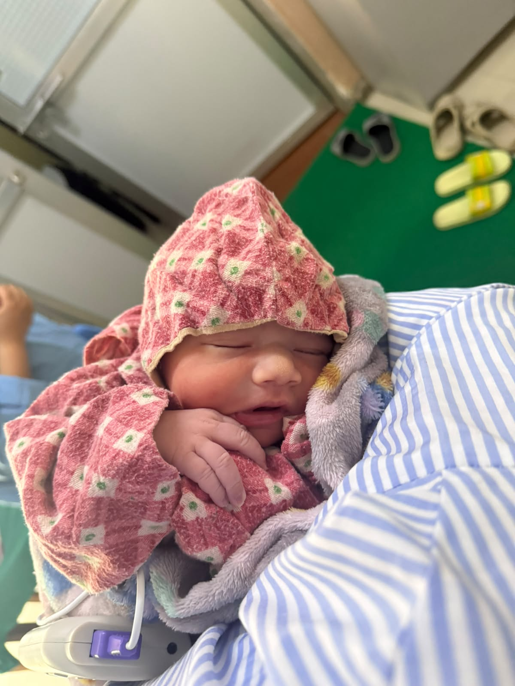
Suddenly someone so tiny became such a big part of our world. This was the beginning — the first photograph in a collection that will keep growing with you.
The sleepy faces. The curious eyes. The tiny smiles. Every few weeks you looked like a completely new little person.

Hello world. I'm one month old now.
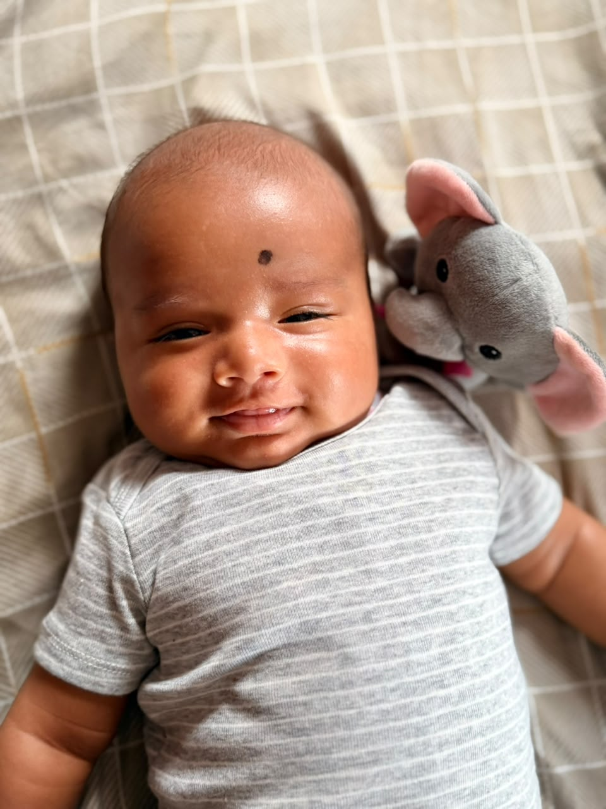
The kind of expression that makes everyone pull out their phone.
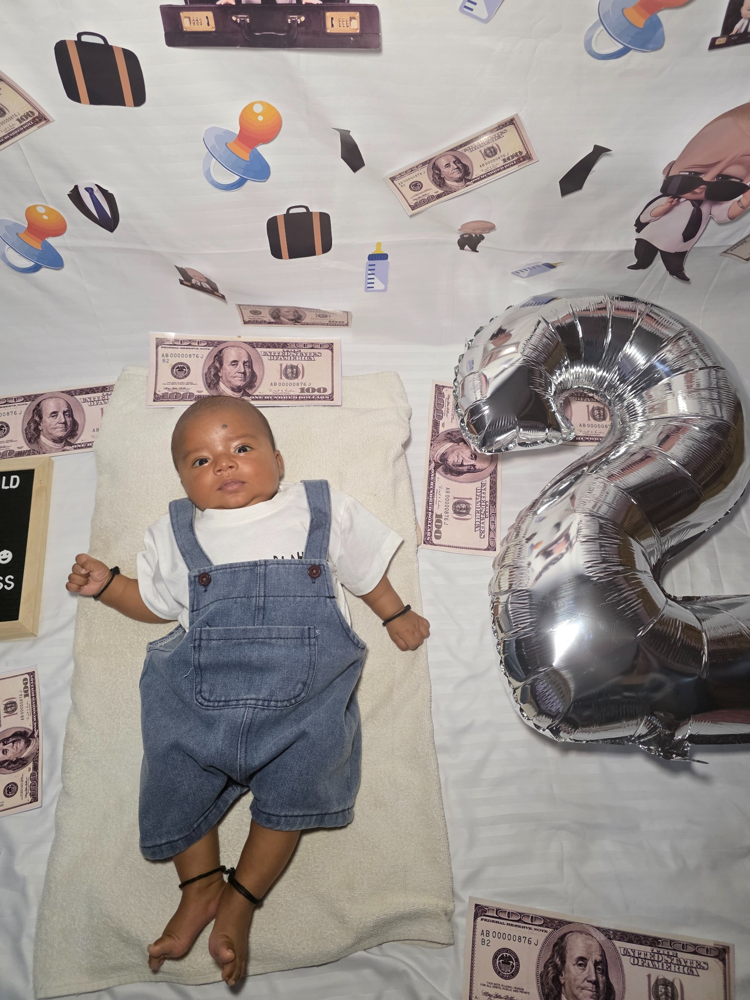
Already looking like you had somewhere important to be.
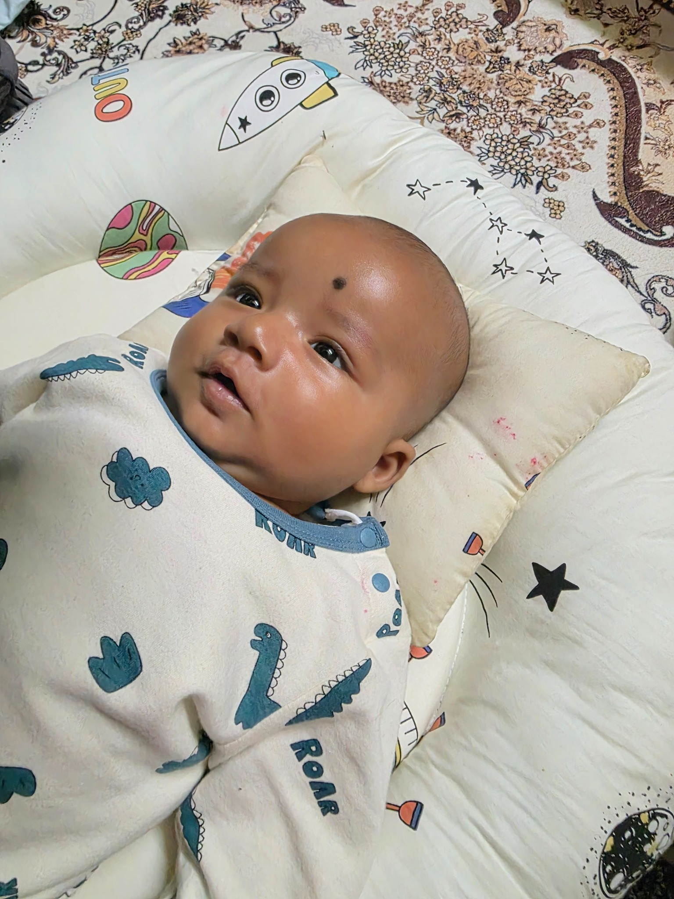
Everything was new. Everything deserved a closer look.
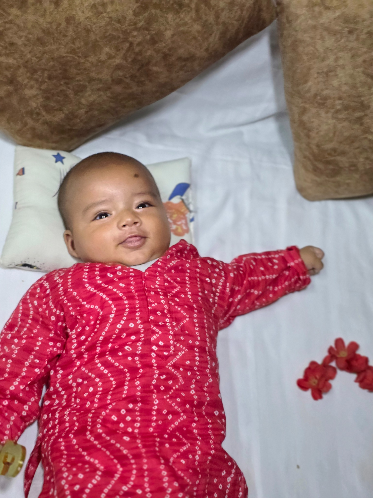
Ordinary family days that quietly became memories.
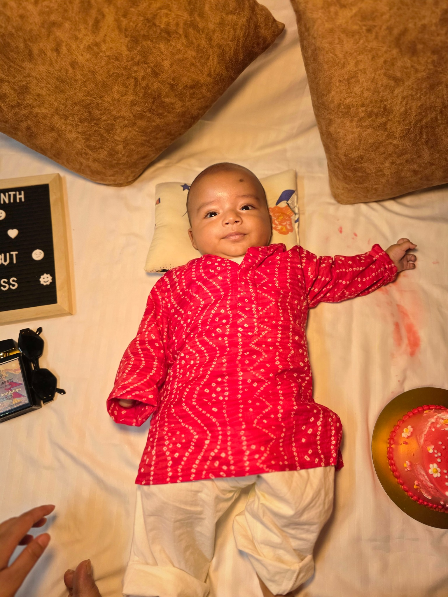
Slow down a little, Ivaan. We're trying to remember all of it.
“You won't remember being this little. That's why we're remembering it for you.”— for Ivaan ❤️
Not every memory needs a special occasion. Sometimes it's simply a look, a funny face, or one quiet afternoon at home.
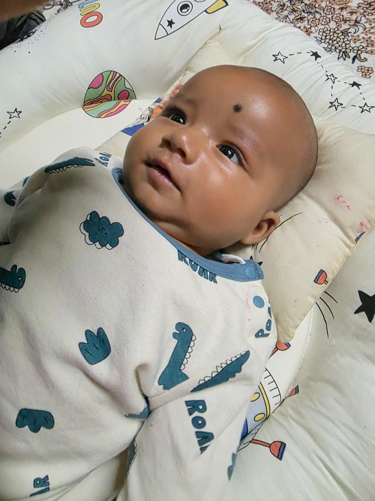
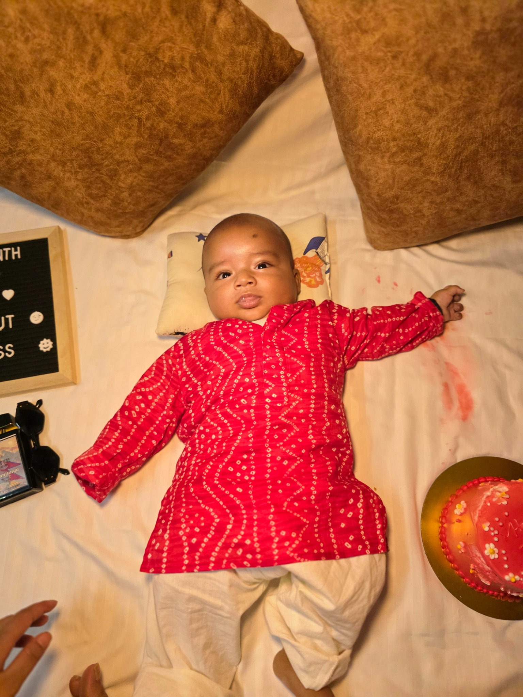
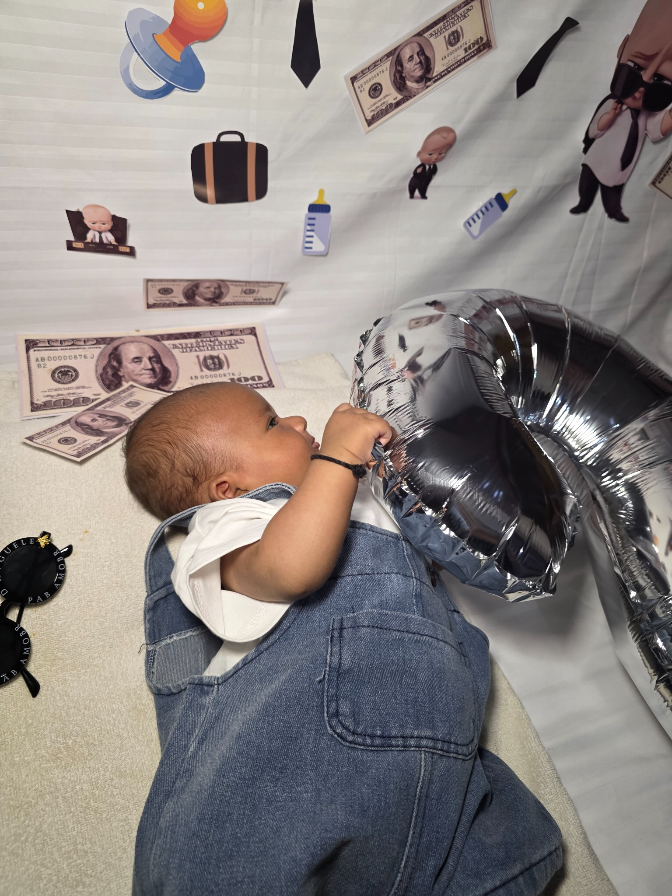
These aren't polished portraits. They're better than that. They're proof of the calls, silly faces and little check-ins that became part of our story.
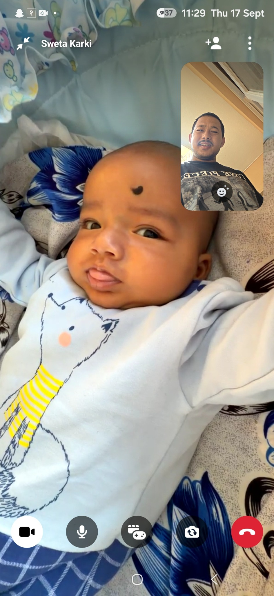
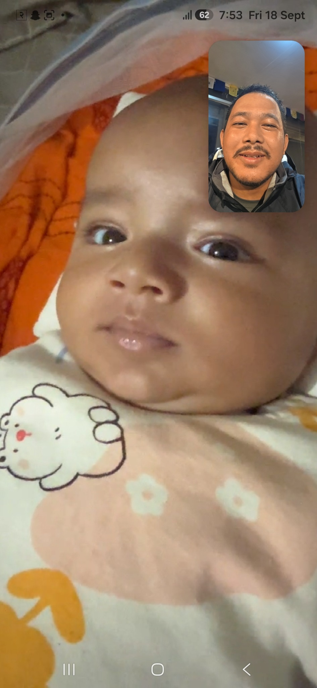
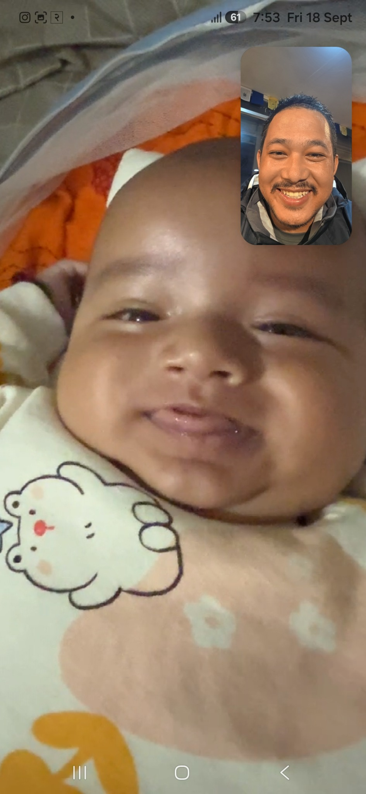
You probably won't remember these days, Ivaan. But I will. The way you looked at me, the tiny smiles, and the completely normal moments that were quietly becoming memories.
Right now, you're too little to understand any of this. You probably won't remember these photos, our video calls, the silly faces, or how excited we were about every tiny thing you did.
But I will.
And someday, when you're old enough to find this little corner of the internet, I hope you realise something:
You were loved from the very beginning. ❤️
This isn't a finished album. As you grow, this page will grow with you — first steps, first trips, first day of school, adventures we haven't even imagined yet.
Our story has only just started.
— Mama